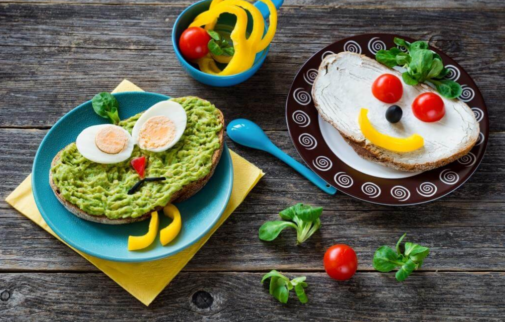

Чому це важливо?
Звичайно, здорове харчування - це збалансоване харчування. Але не тільки це є важливим. Кожен батько повинен засвоїти, що деякі звички варто прищеплювати з самого раннього дитинства. Дитяче харчування багато в чому й істотно відрізняється від харчування дорослих. Це обумовлено, насамперед, високою потребою дитини в поживних і натуральних речовинах. Зазначимо також, що метаболізм дитини вище у 1,5-2 рази, ніж у дорослих. Виходячи з цього - енергетична цінність добового раціону повинна перевищувати енергетичні витрати відсотків на 10. Це необхідно для його росту, розвитку і нарощування м'язової маси.
Здорове харчування дитини в 2 роки
- 4 прийоми їжі на день;
- їжа — варена, тушкована, запечена, приготована на парі;
- тепла та свіжа їжа в будь-який прийом;
- достатня кількість каш із необробленого зерна (гречки, пшона, вівсянки);
- співвідношення жирів, білків, вуглеводів 1:1:4;
- загальна калорійність — 1000 ккал;
10 правил від Абетки Харчування
Меню для дітей
Cаме тепер
починають формуватися харчові звички, які залишаться з маленькою людиною
на довгі роки, до свідомого віку.
Ми склали приклад здорового денного меню для вашої малечі:
|  |
|